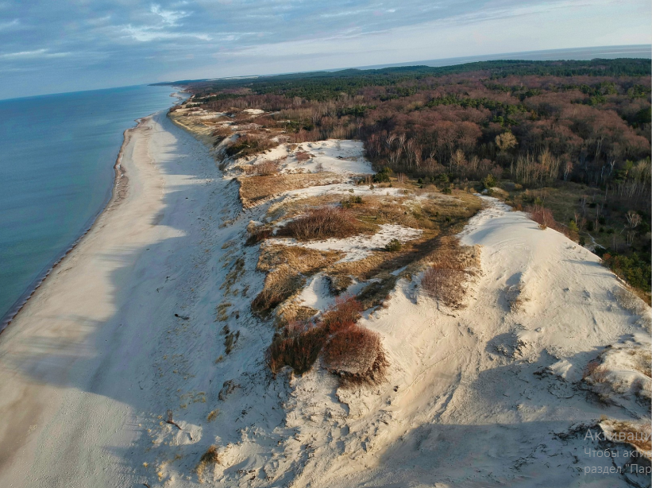
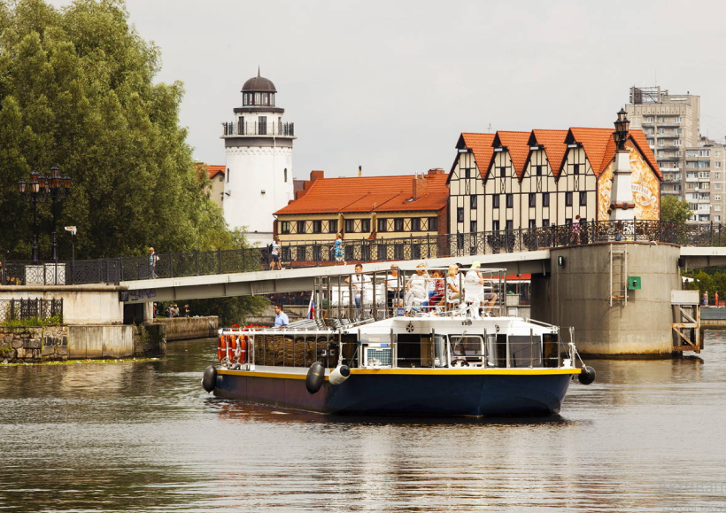

Ваши самые яркие эмоции
СТОИМОСТЬ ЭКСКУРСИИ
УСЛУГИ
О НАС
ПОМОЩЬ
ЗАБРОНИРОВАТЬ
8 (999) 99-99-99
Horizon Travel
Собрать калининградское комбо, полюбоваться морскими курортами и открыть прошлое Пруссии
Куршская коса + Зеленоградск, Светлогорск и Янтарный
Этот большой день вы проведете вблизи моря. Влюбитесь и в местную природу, и в города. На Куршской косе раскроете историю приручения дюн; уютный Зеленоградск подарит ощущение, что вы в Европе. В Светлогорске вас ждут тихие улочки с прусскими виллами, в Янтарном — секреты производства северного золота и чистейший пляж. История и отличные фото дополнят впечатления!
13 000 руб


5 000 руб
Обзорная экскурсия по Калининграду + речная прогулка на катере
Взглянуть на город с двух ракурсов, узнать больше о Кёнигсберге и получить полезные советы
В этой программе мы объединили Калининград земной и речной. Вы проедете на автобусе по главным достопримечательностям от фортов до площади Победы. Будут фотопаузы, а затем прогулка по романтичному острову Канта. Третья часть экскурсии пройдет на катере: вы увидите легендарные суда с воды и зайдете в порт, чтобы лучше ощутить дух города.

© 2023 Horizon Travel
8 (999) 99-99-99
horizontravel.book@gmail.com
Гумерова Лилия Рамисовна